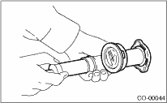

COOLING(H4SO) > Radiator Cap
1. Attach the radiator cap to tester.

2. Increase pressure until the tester gauge pointer stops. Radiator cap is functioning properly if it holds the service limit pressure for five to six seconds.
Radiator side for non-turbo model and coolant filler tank side for turbo model
Specified pressure:
93 — 123 kPa (0.95 — 1.25 kgf/cm2, 14 — 18 psi)
Service limit pressure:
83 kPa (0.85 kgf/cm2, 12 psi)
Radiator side on turbo models
Specified pressure:
122 — 152 kPa (1.24 — 1.55 kgf/cm2, 18 — 22 psi)
Service limit pressure:
112 kPa (1.14 kgf/cm2, 16 psi)
CAUTION:
• Be sure to remove foreign matter and rust from the cap in advance. Otherwise, results of pressure test will be incorrect.
• Do not confuse the cap of coolant filler tank and cap of radiator.